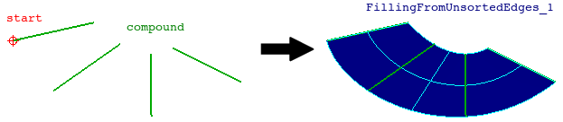

cfdmsh 4.0 documentation
cfdmsh 4.0 documentation cfdmsh 4.0 documentation


Creates a filling face using a set of edges in a random order, starting from a given vertex position.
-
def MakeFillingFromUnsortedEdges( compound_and_start = [None], single = True, add = True, infa = False, dim = 2 ):

| Name | Description | Type | GUI selection [?] | Selection by name [?] | Recursive [?] | Default value |
|---|---|---|---|---|---|---|
| compound_and_start | The compound of edges and the start vertex. | List of 1 Compound of Edges + 1 Vertex |
yes | yes | - | [None] |
| single | See here. | Boolean | - | - | - | True |
| add | See here. | Boolean | - | - | - | True |
| infa | See here. | Boolean | - | - | - | False |
| dim | See here. | Integer | - | - | - | 2 |
| dim Value [?] | single Value [?] | Type | Number | Name |
|---|---|---|---|---|
| 1 | False | Edge | n | "FillingFromUnstortedEdges (Edge)" |
| 1 | True | Compound of Edges | 1 | "FillingFromUnstortedEdges (Edges)" |
| 2 | - | Face | 1 | "FillingFromUnstortedEdges" |
from cfdmsh import * # To adapt to the cfdmsh installation method
vertex_1 = geompy.MakeVertex(-125, 115, 240)
vertex_2 = geompy.MakeVertex(-60, -240, -180)
vertex_3 = geompy.MakeVertex(-345, -45, 300)
vertex_4 = geompy.MakeVertex(-505, -500, 5)
vertex_5 = geompy.MakeVertex(40, 295, 260)
vertex_6 = geompy.MakeVertex(425, 330, -95)
vertex_7 = geompy.MakeVertex(75, 420, 345)
vertex_8 = geompy.MakeVertex(510, 825, 315)
AddToStudy( vertex_8, "start" )
edge_1 = geompy.MakeEdge(vertex_1, vertex_2)
edge_2 = geompy.MakeEdge(vertex_3, vertex_4)
edge_3 = geompy.MakeEdge(vertex_5, vertex_6)
edge_4 = geompy.MakeEdge(vertex_7, vertex_8)
compound = geompy.MakeCompound([edge_1, edge_2, edge_3, edge_4])
AddToStudy( compound, "compound" )
filling_from_unsorted_edges = MakeFillingFromUnsortedEdges([vertex_8, compound])
filling_reordered_edges = MakeFillingFromUnsortedEdges([vertex_8, compound], dim = 1, single = False)
-
tougeron-cfd.com © 2016